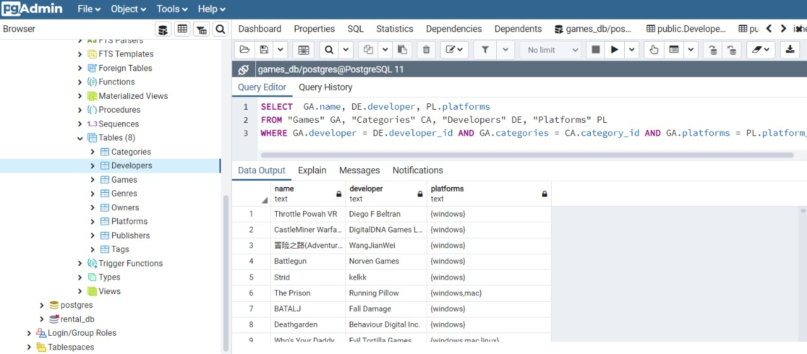
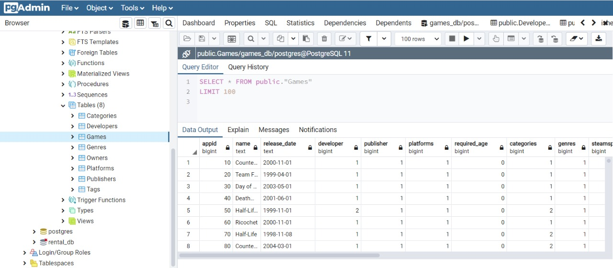

Extract, Transform and Load (ETL)
This project was developed by Beta Team
Load process
As we said in the introduction we considered a Relational DB Model and because of that we use in this process PostgreSQL.
For this purpose, we create a database in PostgreSQL and create the schemas ad hoc to the tables we transform previously.

Finally we import the data and confirm the successfull.
